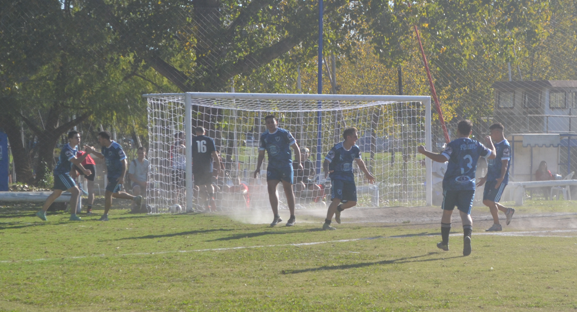
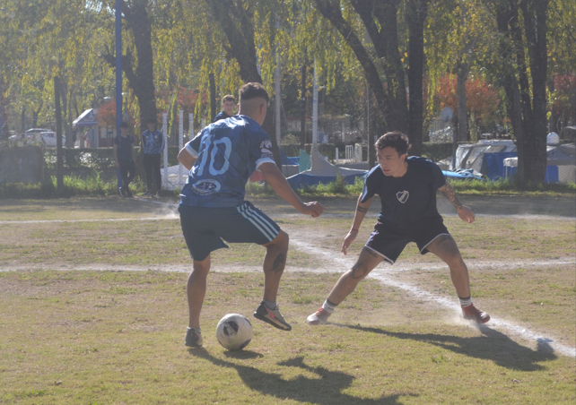
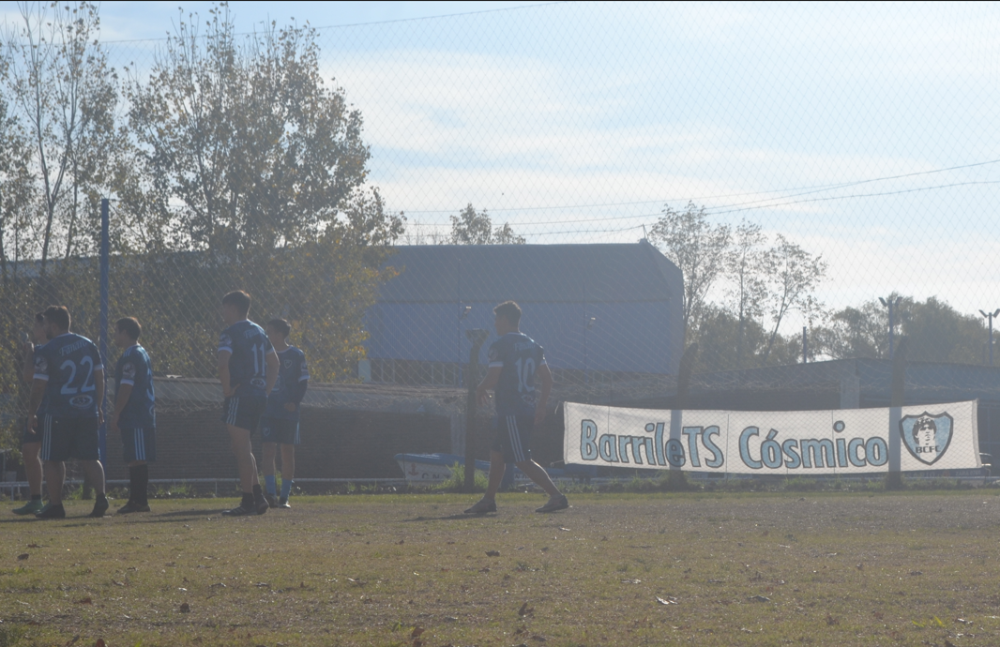
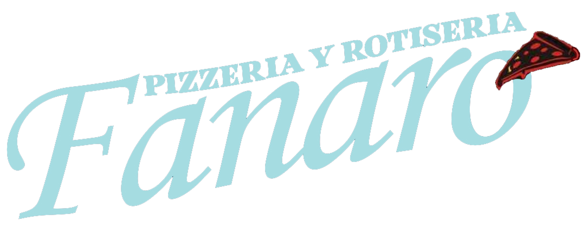
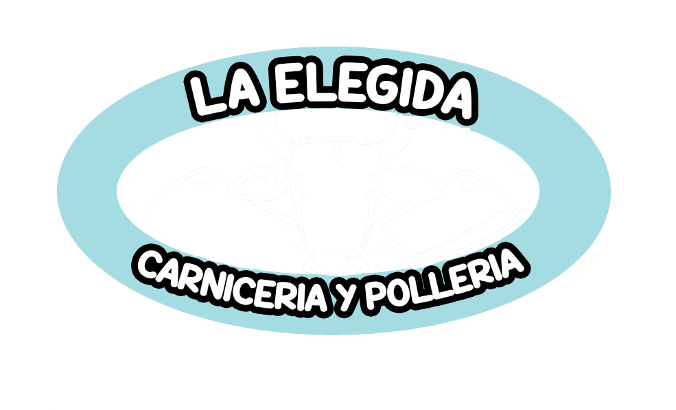
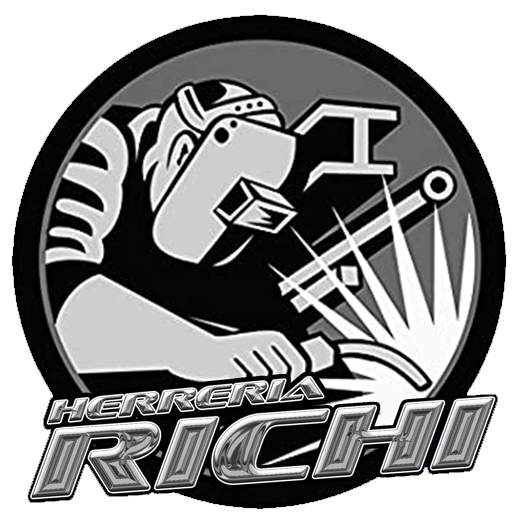
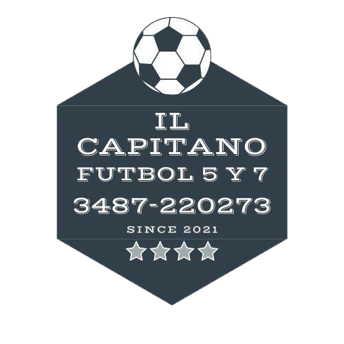
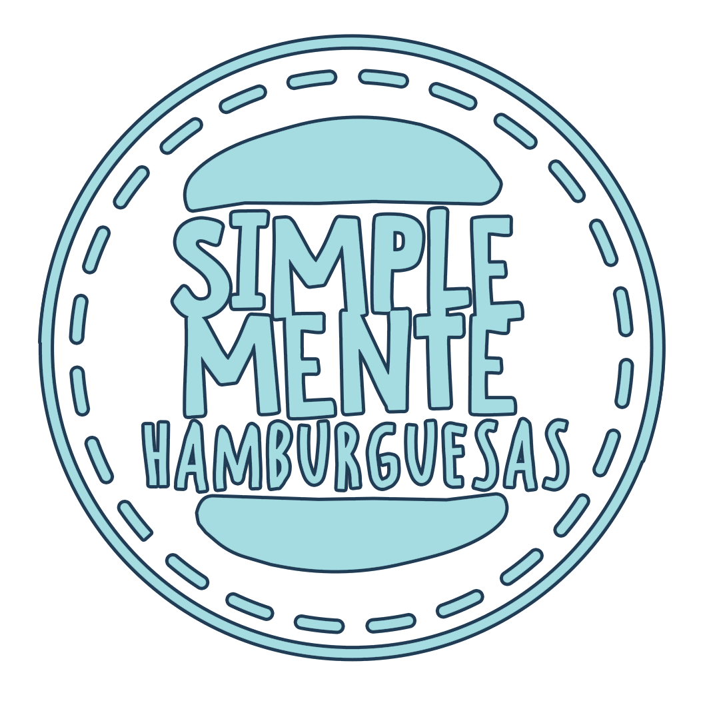

Sitio Oficial
BARRILETS COSMICO FC
Bienvenido a la fanpage del BCFC
NOTICIAS
PARTIDO DIFICIL PERO NOS LLEVAMOS LOS 3PTS
BarrileTS 3-1 El Contra Fc
 Barrilets pudo conseguir la victoria en un partido con mucha ida y vuelta, donde supimos posicionarnos el primer tiempo llendonos al descanso por una diferencia de dos goles. Los cambios para la segunda parte no supieron acomodarse, ayudando al rival a que se parara mejor sobre nuestra cancha y llegando al descuento... terminamos sufriendo los ultimos minutos, pero una contra sentenció el partido 3-1 para el Barrilete.
LA PELOTA SIEMPRE AL 10
BarrileTs 1-0 El Negro


Por la fecha 7 del torneo, el equipo de la gente volvió a la victoria, fue 1-0 contra El Negro. El primer tiempo fue inmirable, una atrocidad a la vista del espectador, lo único destacable fue un misil por parte de Gianlu y un remate del mariscal ,en su vuelta luego de 3 fechas lesionado. El segunto tiempo fue otra cosa, oportunidades para los 2 lados, un partido de ida y vuelta pero con muchos pelotazos, donde Isma y chichi respondieron bien en la defensa.
Cuando se empezaba a sentir el empate, a 10 minutos del final apareció nuestro 10 muñozqui , agarrando un rebote que dejó el arquero, para darnos los 3 puntos y mantener la esperanza de pelear arriba
Próximo partido:
Barrilets Cosmico vs El Toco - Cancha 2
Para terminar el torneo de la B, BarrileTS Cosmco se mide ante un gran rival como lo es El Toco Fc, tratando de terminar en la mejor ubicacion posible en la última fecha del torneo. Los invitamos a asistir al gran partido que se va a dar el día domingo, 16:45hs, cancha 2.
- 
- 
- 
- 
- 